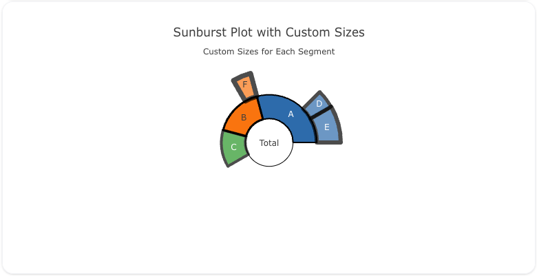

Sunburst
Overview
The sunburst trace type is used to create sunburst charts, which visualize hierarchical data in a circular format. Sunburst charts are useful for showing relationships between parts and the whole, with nested levels of data radiating outward from the center.
You can customize the colors, labels, and hierarchy of the chart to represent your data effectively.
Common Uses
- Hierarchical Data Visualization: Displaying relationships between different levels of data.
- Part-to-Whole Relationships: Visualizing how parts contribute to the whole across multiple levels.
- Categorical Data: Showing categorical breakdowns with nested data.
Check out the Attributes for the full set of configuration options
Examples
Common Configurations
Here's a simple sunburst plot showing a hierarchy of categories:

You can copy this code below to create this chart in your project:
models:
- name: sunburst-data
args:
- echo
- |
labels,parents,values
Total,,100
A,Total,40
B,Total,30
C,Total,30
D,A,10
E,A,20
F,B,10
traces:
- name: Simple Sunburst Plot
model: ${ref(sunburst-data)}
props:
type: sunburst
labels: ?{labels}
parents: ?{parents}
values: ?{"values"}
charts:
- name: Simple Sunburst Chart
traces:
- ${ref(Simple Sunburst Plot)}
layout:
title:
text: Simple Sunburst Chart<br><sub>Hierarchical Data Visualization</sub>
This example demonstrates a sunburst plot where each category has custom colors:

Here's the code:
models:
- name: sunburst-data-colors
args:
- echo
- |
labels,parents,values,colors
Total,,100,#1f77b4
A,Total,40,#ff7f0e
B,Total,30,#2ca02c
C,Total,30,#d62728
D,A,10,#9467bd
E,A,20,#8c564b
F,B,10,#e377c2
traces:
- name: Sunburst Plot with Custom Colors
model: ${ref(sunburst-data-colors)}
props:
type: sunburst
labels: ?{labels}
parents: ?{parents}
values: ?{"values"}
marker:
colors: ?{colors}
charts:
- name: Sunburst Chart with Custom Colors
traces:
- ${ref(Sunburst Plot with Custom Colors)}
layout:
title:
text: Sunburst Plot with Custom Colors<br><sub>Custom Colors for Each Category</sub>
Here's a sunburst plot where the size of each segment is customized based on additional values:

Here's the code:
models:
- name: sunburst-data-sizes
args:
- echo
- |
labels,parents,values,size
Total,,100,1
A,Total,40,2
B,Total,30,3
C,Total,30,4
D,A,10,5
E,A,20,6
F,B,10,7
traces:
- name: Sunburst Plot with Custom Sizes
model: ${ref(sunburst-data-sizes)}
props:
type: sunburst
labels: ?{labels}
parents: ?{parents}
values: ?{"values"}
marker:
line:
width: ?{size}
color: black
charts:
- name: Sunburst Chart with Custom Sizes
traces:
- ${ref(Sunburst Plot with Custom Sizes)}
layout:
title:
text: Sunburst Plot with Custom Sizes<br><sub>Custom Sizes for Each Segment</sub>